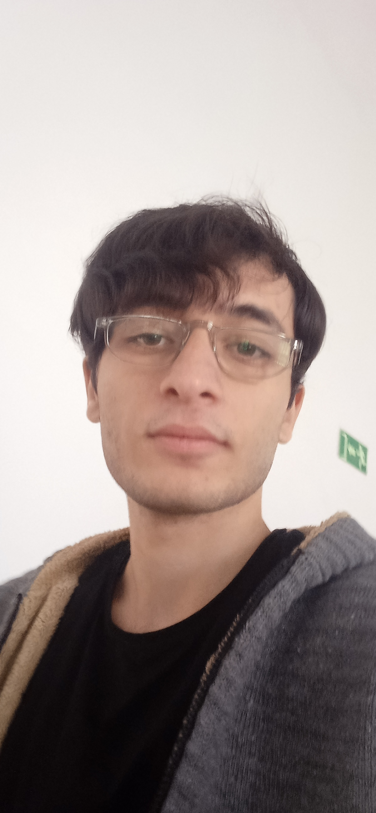

MERHABA, HOŞGELDİNİZ!

ABDÜLBAKİ BAYNAZ
YAZILIMCI |VERİBİLİMCİ |MATEMATİKÇİ
********
🎯 "Hem derinlemesine Matematik bilgisine sahip bir eğitimci, hem de yetkin bir Yazılım Geliştirici olarak çift yönlü uzmanlık sunuyorum.
Matematik alanında, Ortaokuldan Üniversiteye kadar her seviyede (Cebir, Analiz, Geometri vb.) kişiselleştirilmiş özel dersler ve akademik destek sağlıyorum.
Yazılım ve Teknoloji alanında ise, sadece eğitim vermekle kalmıyor, aynı zamanda projeler geliştiriyorum:
- Web Geliştirme (Full-Stack)
- Mobil Uygulama Geliştirme (Android/kotlin)
- Veri Bilimi ve Analizi(PYTHON DEVELOPER)
Gerek birebir eğitimlerde gerekse somut projelerde size destek olmaya hazırım. Matematiksel düşünce yapısını kodlama becerisiyle birleştirerek, hedeflerinize ulaşmanız için en güçlü temeli atmanıza yardımcı olabilirim."